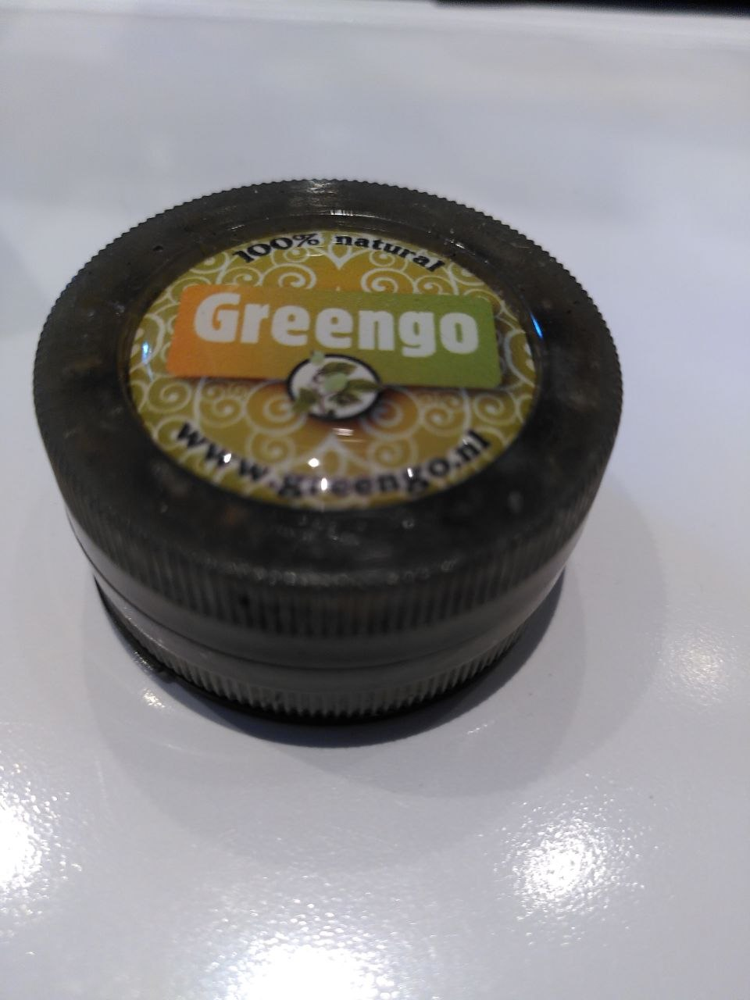
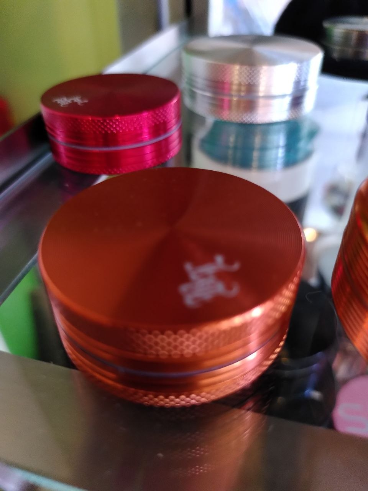
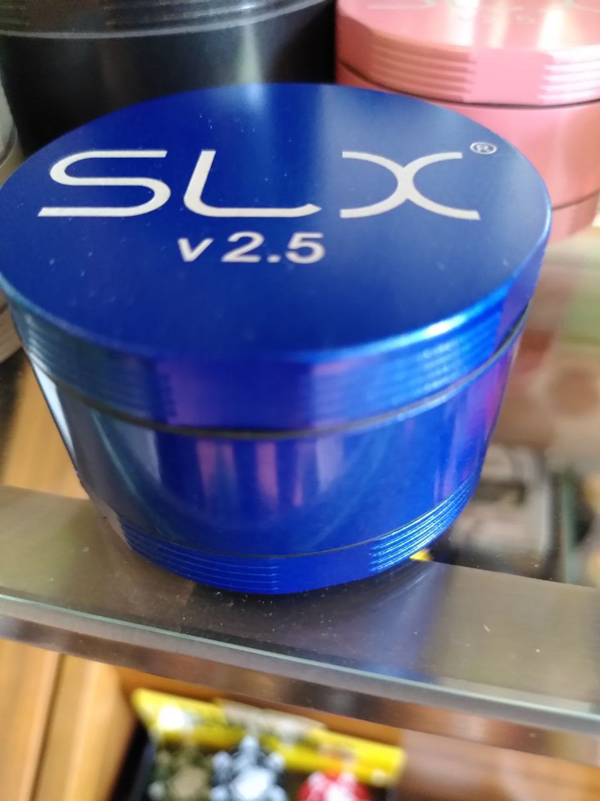
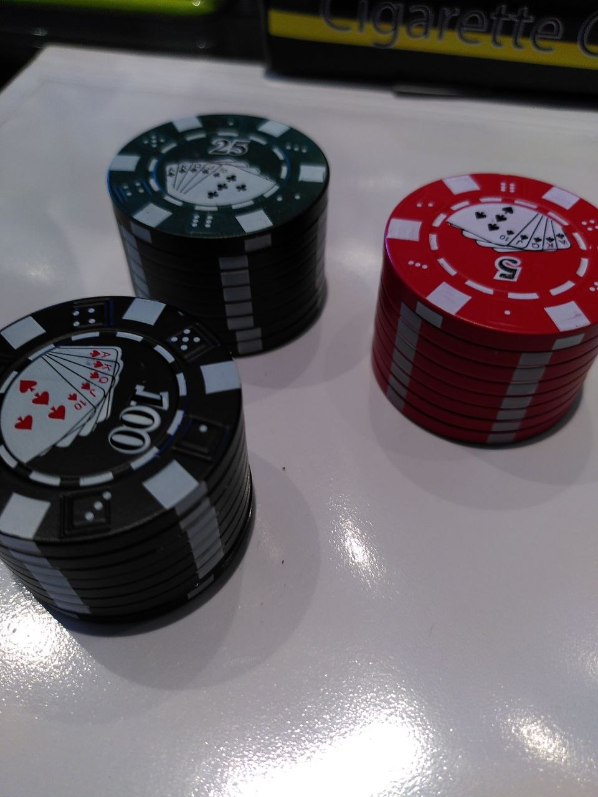
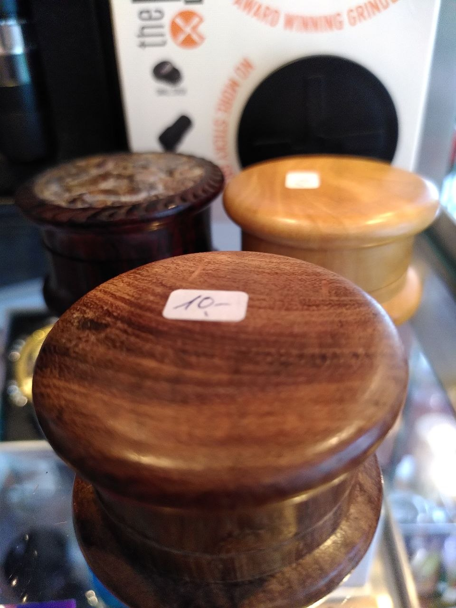

How to run it. Open /pos/catalog on the tablet, use
📷 snap-find, and feed it the photo named in each test — either from the folder below or by
re-shooting the item on the shelf. Mark ✓ / ⚠ / ✗, and use the 🎤 mic on each note to talk
instead of type. Paste a screenshot of what came back — that is the part I cannot see.
onboarding/testsheets/grinders/2026-08-06-shelf-wall/, sorted into
grinders-metal/, grinders-wood/, grinders-plastic/ …
Full descriptions in INDEX.md in that folder.
banco.wolfhold.app — deployed 7bfb431, 2026-08-06.
Snap-find and search are read-only. Do not press Create new product in
tests 1–4; test 5 is the only one where creating is the point, and note the SKU if you do.
🟢 P1 · Greengo — a perfect match that used to be invisible fixed 2026-08-06
What happened before the fix. The AI read this photo perfectly — name
Greengo, category Grinders, brand printed right on the lid with its
website. Search then returned ten generic grinders at 0.625 and
not one of them a Greengo, while the shop's six real Greengo rows scored 1.000
and never appeared. They are filed under Other, and the category hint was sorting
above the score — so every grinder, however wrong, beat every Greengo, however right.
The bonus is now added to the score instead of ranked above it.

- Snap-find
grinder-greengo-metal-2part-branded-w37.jpgthe AI reads the name as Greengo — it is printed on the lid - Look at what search returned underneath Greengo rows at the top (King Size, Rolls Slim, Wide Rolls…) at 1.000
- ⚠️ Now the honest part: are any of them the grinder? No. The shop's Greengo rows are all papers. The Greengo grinder is genuinely not in the catalogue — this is a correct "brand found, product missing".
- Type
Greengointo plain catalogue search too, no photo same six rows — the photo route and the typed route agree
🏷️ P2 · Champ High — the brand is a mark, not text
This lid carries the Champ High figure and no printed brand name at all.
The catalogue holds exactly one: Grinder Champ High White Leaf - 4-teiliger Ø50mm,
CHF 15.00 — the row you found and edited yourself. If the AI can name the logo, the whole
no-barcode wall becomes searchable. If it cannot, this class needs a shelf label.
Measured today: typing champ high scores that row 1.000. So this
test is purely can the model read the picture — the search half is already proven.

- Snap-find
grinder-alu-orange-copper-2part-champhigh-w32.jpga name containing Champ High, category Grinders - If it did not say Champ High — write down exactly what it did say. "Orange metal grinder" is a useful failure; copy the wording into the note
- Check the top result
Grinder Champ High White Leaf - 4-teiliger Ø50mmCHF 15.00 first - A
Sturmfeuerzeug Jet "Champ High Titan"may appear too that is correct and new today — same brand, different shelf. Not a bug. - Now the same test on the purple/green pair,
grinder-alu-purple-green-2part-champhigh-w28.jpgsame brand read — proves it was the logo, not luck with the colour
🤔 P3 · SLX v2.5 — genuinely not in the catalogue
I checked: zero hits. No product name or description anywhere in 5,379 rows contains "SLX". This is a real branded grinder sitting on your shelf that Banco has never heard of.
So the right behaviour is a confident read of the name and an honest "no strong match" on the search — not a plausible wrong grinder presented as the answer. Measured: the best score is 0.529, which is the system saying "nothing close". A wrong product shown confidently is the worst outcome on this sheet — that is the Cannazym-bound-to-Cannaboost mistake, and nothing in the database can catch it afterwards.

- Snap-find
grinder-slx-v25-blue-ceramic-coated-w33.jpgname reads SLX (v2.5 / 2.5 / non-stick / ceramic all fine) - Read the screen carefully: does it tell you it found nothing good? a "no strong match — search or create new" style message, not a top result dressed up as the answer
- ✗ Mark FAIL if any grinder is presented as the match scores here are ~0.5 — the screen must not make that look like a find
- Is the create new route offered, and is it obvious? yes — this is a real product the shop owns and should be added
- 🛑 Do not create it yet. Note the price on the shelf instead. we add it deliberately, with cost and photo, not mid-test
🔴 P4 · Poker chip — one missing space costs the right answer known, open
The row exists: Grinder Metall 3teilig mit Sieb Poker Chip 42mm,
CHF 9.90. Whether you find it depends entirely on how the AI spells it:
| what gets searched | score | where the right row lands |
|---|---|---|
Poker Chip Grinder — two words | 0.611 | ✅ #1 |
Pokerchip Grinder — one word | 0.450 | ❌ not in the top 6, under a Hello Kitty grinder |
German and Swiss German glue compounds together — Pokerchip, Kräutermühle,
Holzgrinder. The right row survives the search and then loses on score, silently.
Same family as the pc./Stk. bug. Fixing it properly means teaching the
search to split compounds, which is a real change — so first I want to know
how often it actually bites in your hands.

- Snap-find
grinder-plastic-pokerchip-three-colours-w39.jpgnote the exact name the AI produced — the spacing is the whole test - Did the CHF 9.90
Poker Chip 42mmrow come back? if the AI wrote "Poker Chip" → yes, #1. If it wrote "Pokerchip" → no. - Now type it yourself, both ways:
Poker Chip Grinder, thenPokerchip Grinderfirst finds it, second does not — this is the bug, reproduced by hand - Try
Pokerchipalone (no "Grinder") 0.615 — better. Worth knowing that the extra word hurts. - 💭 Your call: how often do you type German compounds at the till? say it into the mic — this decides whether I build decompounding next
🪵 P5 · Wooden grinders — what does it do with a shelf, not a product?
This is not one product. It is three wooden grinders and a
10.- price sticker, shot the way you would actually shoot a shelf. Every
other test hands the AI a single object on a white counter; this one is the real world.
The catalogue has five wooden rows, and typing Holz Grinder scores them
all 1.000 — Grinder Holz / Alu Egypt 60mm, Indianer,
Maori (CHF 39), Rosenholz Blatt 35mm (CHF 12.90). None is CHF 10.
So the sticker and the catalogue disagree, and I want to know which one is true.

- Snap-find
grinder-wood-three-on-shelf-10chf-w26.jpgit picks one grinder and names it — it must not invent a "set of 3" - Did it read the
10.-sticker as a price? It should NOT. The page reader is deliberately blocked from returning a price — prices come from the shop, never from a photo. - ✗ Mark FAIL if a price appeared anywhere it could be saved a photographed price becoming a till price is how a shop loses money quietly
- Do the five
Holzrows come back? Egypt / Indianer / Maori / Rosenholz — all at the top - 🧍 Pick the grinders up. Which row is the CHF 10 one really? the 08-02 lesson: only a hand on the product settles a price disagreement
- Now the harder one:
grinder-wood-rosewood-tall-carved-lid-w30.jpga single object — does a clean shot beat the shelf shot? that answers whether it's worth re-shooting the wall
🎯 The verdict
Everything above is measurable. These two are not, and only you can answer them.
- Is the photo route fast enough to use with a customer waiting? time one full snap → product on screen, and write the seconds
- Of the five, which failure would have cost you a sale? that one gets fixed first — the others wait
- Anything on screen that said something untrue? a confident wrong match, a price that came from a photo, a green tick over something nobody checked. Those outrank every ranking score on this sheet.
📋 When you're done
Press 📋 findings in the header — it copies every mark, note and screenshot count to the clipboard. Paste that straight back to me. Marks and notes are saved in this browser as you go, so closing the tab is safe.